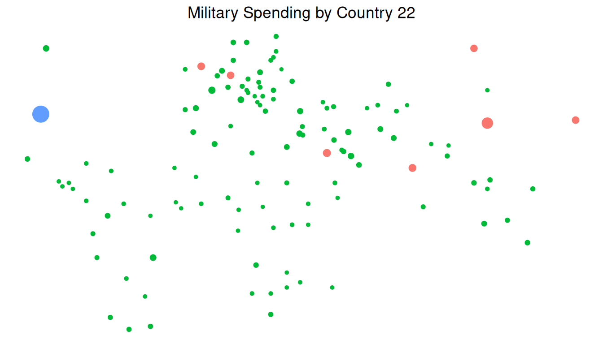
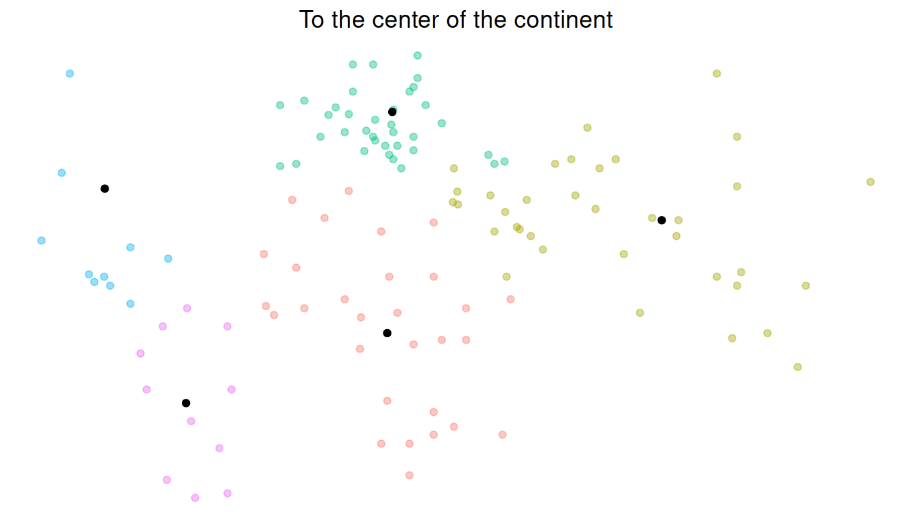
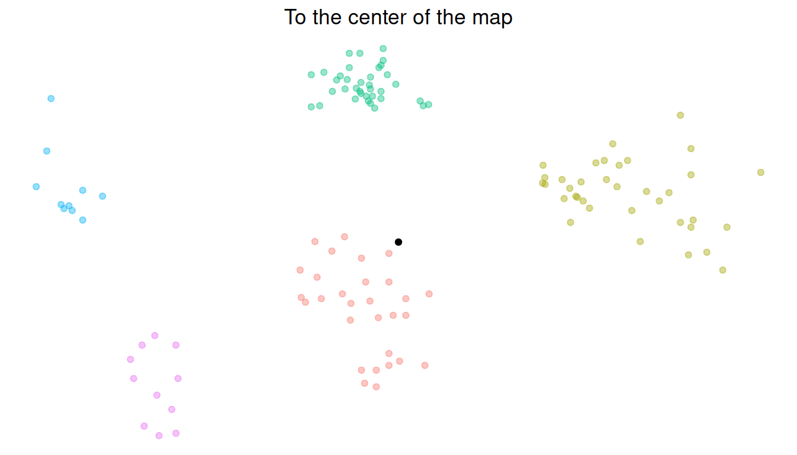
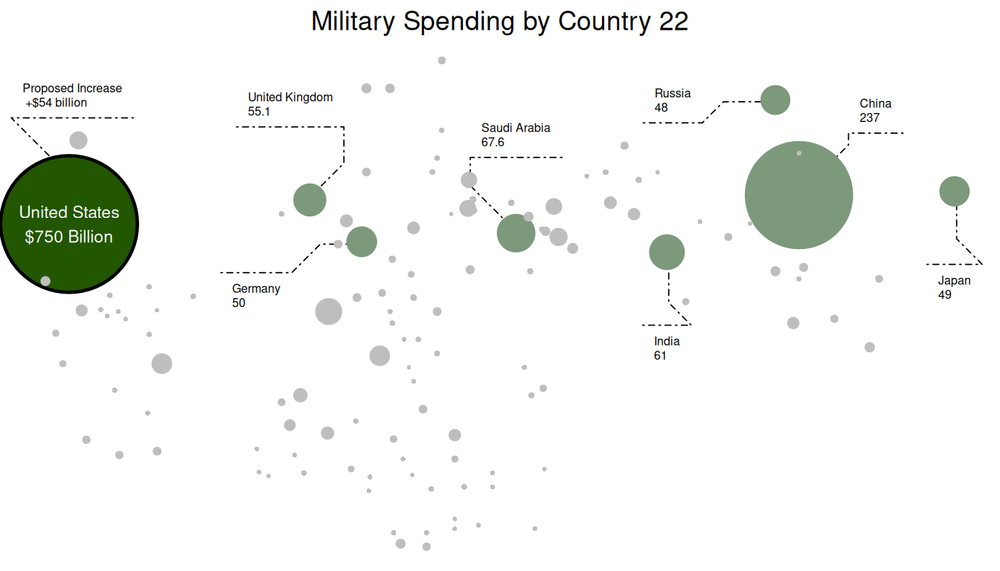
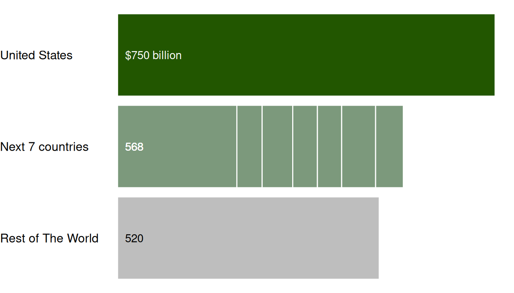
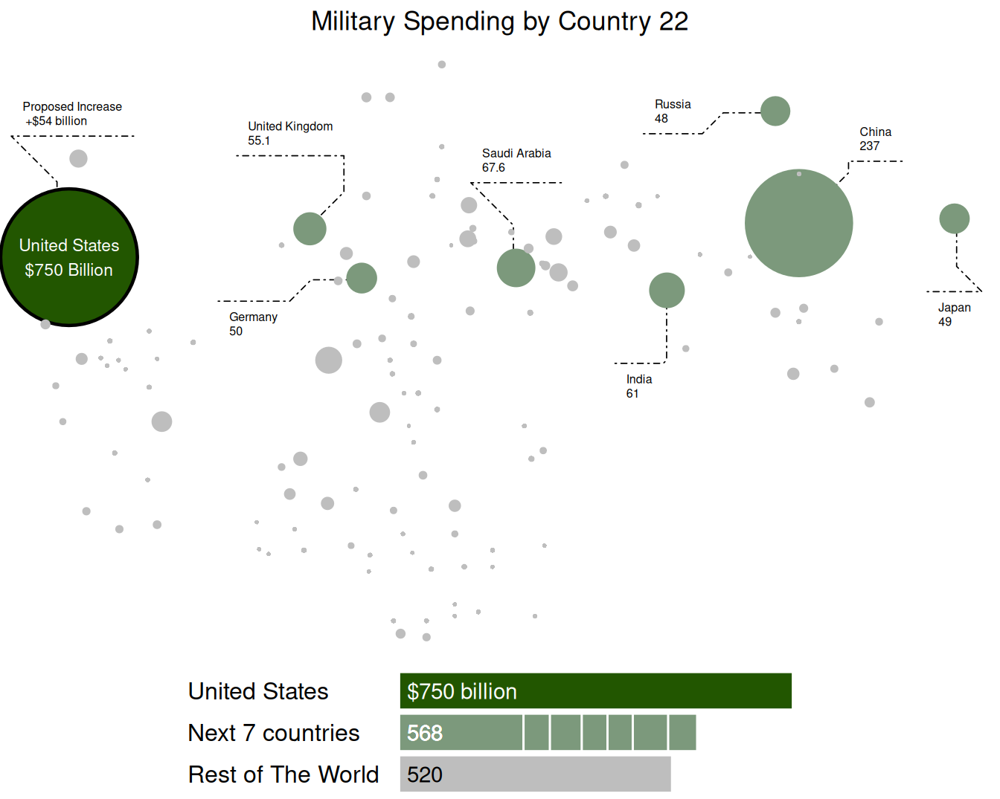

In this article I have a walkthrough on how to create a graph as closely as possible that was published by the New York Times with ggplot2, but is it graph or a map paste(graph,map); it is both. It shows the country military spending in respect to the geolocation of the country.
The New York Times was posting couple of articles for people/student to be able to analyze the graph with some session being held to discuss them By The Learning Network and this graphs was one of them with a title of What’s Going On in This Graph? it was posted on Feb. 7, 2019 which i found it really interesting to replicate because the graph was a representation of each country but on a map showing their military spending with their bubble size.
The 3 files will be used are:
# country with spending and population 2022
country_main_file<- data.frame(read_csv(file = "csvData.csv"))
#country telemetaries
country_file<- data.frame(read_csv(file = "Countries.csv"))
#country continant
country_cont<- data.frame(read_csv(file = "country_continent.csv"))#to change spending from numeric to Billions
to_billion <- 1000000000
#choosing the desired columns from the lat and lng data file for each country
#and joining it to the continent
country_file <- country_file %>%
transmute(country = Country, lat = Latitude,lng = Longitude)%>%
left_join(.,country_cont,by = "country")
#main data frame
country_main <- country_main_file%>%
#changing rhe spending to billions for the text view
mutate(spending_text = paste(spending/to_billion,"Billion"))%>%
mutate(text = paste("Country: ", country, "\nMilitary Sepnding: ", spending_text, sep=""))%>%
#removing the population column
select(-c(pop2022))%>%
#joining the data frame with lat and lng and continent
left_join(.,country_file,by="country")%>%
#arrangaing the data set into descending order in respect of military spending
arrange(desc(spending))%>%
#creating a variable "graph group" to be able to differentiate between
#the first country then the next 7 and the rest
#creating a variable "color graph" to assign each group a color
#creating a variable "country_id" to give a numeric ID to each country
#in respect of the military spending
mutate(
graph_group = ifelse(
row_number()==1, paste(country,spending_text,sep=" "),
ifelse(
row_number()>=2 & row_number()<=8, "Next 7 countries","Rest of The World")),
color_graph = ifelse(
row_number()==1, "#225600",
ifelse(
row_number()>=2 & row_number()<=8, "#7c997c", "#bebebe")),
country_id=row_number()
) %>%
#changing the military spending for the rest of the world to divide it by 4
#to decrease their size in the graph "spending_extra"
mutate(spending_extra = ifelse(country_id>9,spending/4,spending))%>%
#dropping NAs
drop_na()%>%
#
mutate(
graph_text = ifelse(
country_id == 1, paste(country,"\n","$",spending_text,sep=""),
ifelse(
country_id>1 & country_id<9, paste(country,"\n",spending/to_billion,sep=""), "")),
#creating a variable to be able to create the legend
legend_group=ifelse(row_number()>=2 & row_number()<=8,country,graph_group),
#creating a ratio for the bubble size so the highest spending would be 10
#"the max" and the rest ratio from the country that spends the most
bubble_size = (spending - min(country_main_file$spending)) /
(max(country_main_file$spending) - min(country_main_file$spending)),
#making north america and south america near the rest of the map
lng = ifelse(continent=="North America" | continent=="South America",lng+35,lng )
)%>%
#Removing Oceania to make it easier
filter(continent!="Oceania")Plotting all the point on a graph just to see the output and adding this graph to ggplotly to make it interactive
p <- ggplot(country_main) +
aes( x =lng ,y=lat,color=graph_group , size = spending,text=text,label = country)+
geom_point(alpha=1.3)+
theme_void()+
ggtitle("Military Spending by Country 22") +
theme(plot.title = element_text(hjust = 0.5),legend.position="none")
p
ggplotly(p, tooltip="text")The problem is getting all the points together without making them to over lap.. since there is no package that take into consideration that it is lat and lng of country they do a great job at repelling the point from each other but not the same way we need it, so by getting the center of each continent and drawing a line from each country to the center of its continent then dividing this number into 2 to get
Variables will use later in equations
divide_num <- 2
multiplier <- 10# To get the continent center by adding the max of the cords with the min
# and then dividing by 2
continent_center <- country_main%>%
group_by(continent)%>%
summarise(top_lat=(max(lat)+min(lat))/2,top_lng=(max(lng)+min(lng))/2)
# to make all the points go to the center of the continent
to_continent<-country_main%>%
#selecting the desired columns
select(country,lat,lng,spending,color_graph,graph_text,continent,
bubble_size,graph_group)%>%
#joing each country the center of its continent
left_join(.,continent_center, by ="continent")%>%
#calculating the slope between each country and the center of its continent
mutate(slope = (lat-top_lat)/(lng-top_lng))%>%
#getting the intercept of each country and the center of continent line
mutate(intercept = (slope*lng)*-1 + lat)%>%
#creating a new Y value "lat" and dividing by "divide_num" to move the old
#value on the same line to the center of the continent
mutate(new_lat = (slope*(
ifelse(top_lng<0 & lng>top_lng,(abs(top_lng-lng)/divide_num)+top_lng,
ifelse(top_lng<0 & lng<top_lng,top_lng-(abs(top_lng-lng)/ifelse(
continent !="Europe",divide_num*1,divide_num)),
ifelse(top_lng>0 & lng>top_lng,top_lng+(abs(top_lng-lng)/ifelse(
continent !="Europe",divide_num*1,divide_num)),
ifelse(top_lng>0 & lng<top_lng,top_lng-(abs(top_lng-lng)/ifelse(
continent !="Europe",divide_num*1,divide_num)),
top_lng)))) ) )+intercept)%>%
#generating a new X value "lng"
mutate(new_lng = (new_lat+(intercept*-1))/slope)%>%
mutate(new_lat=ifelse(is.na(new_lat),lat,new_lat),
new_lng =ifelse(is.na(new_lng),lng,new_lng) )%>%
#selecting only the columns that we need and adding the calculations that
#we have made to lat and lng
transmute(country,lat=new_lat,lng=new_lng,spending,color_graph,graph_text,
continent,bubble_size,graph_group)
# to visualize what happened in the previous part
to_continent_graph <-country_main%>%
#selecting the desired columns from the main data frame and adding a new
#column to be able to animate
transmute(lat,lng,continent,country,frame_num=1)%>%
#appending to_continent dataframe to the normal country data and adding a
#column frame_num=2 to indicate to the animation its the second part
union(.,to_continent%>%transmute(lat,lng,continent,country,frame_num=2))%>%
#plotting the data and coloring each contient to be able to see the transformation
ggplot(.,aes(x=lng,y=lat,color=continent))+
#decreasing the opacity of the point
geom_point(alpha=0.4)+
#plotting thr center of each continent to be able to see the movement direction
geom_point(data= continent_center,mapping = aes(top_lng,top_lat),color="black")+
#applying a void theme
theme_void()+
#adding a title for the graph
ggtitle("To the center of the continent")+
#making the plot title centered and removing the legend
theme(plot.title = element_text(hjust = 0.5),
legend.position = "none")+
#for the animation the column we have created earlier
transition_time(frame_num)
to_continent_graph
# To get the map center by adding the max of the cords with the min
# and then dividing by 2
center_map <- to_continent%>%
select(lat,lng)%>%
summarise(lat=(max(lat)+min(lat))/2,lng=(max(lng)+min(lng))/2)
#creating a data frame to move the countires towards the center of the map
to_center <- to_continent%>%
#adding the lat and lng of the center of the map
mutate(top_lat =as.numeric(center_map[1]), top_lng =as.numeric(center_map[2]))%>%
#calculating the slope between each country and the center of the map
mutate(slope = (lat-top_lat)/(lng-top_lng))%>%
#getting the intercept of each country and the center of the map line
mutate(intercept = (slope*lng)*-1 + lat)%>%
#creating a new Y value "lat" and dividing by "divide_num"*2 to move the
#old value on the same line to the center of the map
mutate(new_lat = (slope*(
ifelse(top_lng<0 & lng>top_lng,(abs(top_lng-lng)/(divide_num*2))+top_lng,
ifelse(top_lng<0 & lng<top_lng,top_lng-(abs(top_lng-lng)/(divide_num*2)),
ifelse(top_lng>0 & lng>top_lng,top_lng+(abs(top_lng-lng)/(divide_num*2)),
ifelse(top_lng>0 & lng<top_lng,top_lng-(abs(top_lng-lng)/(divide_num*2)),
top_lng)))) ) )+intercept)%>%
#generating a new X value "lng"
mutate(new_lng = (new_lat+(intercept*-1))/slope)%>%
#error handling
mutate(new_lat=ifelse(is.na(new_lat),lat,new_lat),
new_lng =ifelse(is.na(new_lng),lng,new_lng) )%>%
#selecting only the columns that we need and adding the calculations that we
#have made to lat and lng
transmute(country,lat=new_lat,lng=new_lng,spending,color_graph,graph_text,
continent,bubble_size,new_lat,new_lng,graph_group)
# to visualize what happened in the previous part
to_center_graph <-to_continent%>%
#selecting the desired columns from to_continent data frame and adding
#a new column to be able to animate
transmute(lat,lng,continent,country,frame_num=1)%>%
#appending to_center dataframe to to_continent dataframe and adding
#a column frame_num=2 to indicate to the animation its the second part
union(.,to_center%>%transmute(lat,lng,continent,country,frame_num=2))%>%
#plotting the data and coloring each contient to be able to see the transformation
ggplot(.,aes(x=lng,y=lat,color=continent))+
#decreasing the opacity of the point
geom_point(alpha=0.4)+
#plotting the center of the map point to see the movement towards it
geom_point(data= center_map ,mapping = aes(lng,lat),color="black")+
#applying theme void
theme_void()+
#adding title to the graph
ggtitle("To the center of the map")+
#aligning the title to the center of the graph and removing the legend
theme(plot.title = element_text(hjust = 0.5),
legend.position = "none")+
#for the animation the column we have created earlier
transition_time(frame_num)
to_center_graph
final_country_adj <- to_center%>%
#move all north america up and left
mutate(
top_lat =ifelse(continent=="North America",
((to_center[to_center$country=="Finland",2]-lat)/1.1)+lat,lat),
top_lng =ifelse(continent=="North America",lng+10,lng))%>%
# Moving Africa up towards spain
mutate(
top_lat =ifelse(continent=="Africa",
(((to_center[to_center$country=="Spain",2]-lat)/1.05)+lat)+2.25,
top_lat))%>%
#Moving South America up toward Panama and right manual
mutate(
top_lat =ifelse(continent=="South America",
((to_center[to_center$country=="Panama",2]-lat)/1.1)+lat+8.85,top_lat),
top_lng =ifelse(continent=="South America",lng+4.7,top_lng))%>%
#decreasing the distance between the highest lat and Europe
mutate(
top_lat =ifelse(continent=="Europe",
((to_center[to_center$country=="Finland",2]-lat)/1.5)+lat,top_lat))%>%
mutate(
#Moving Asia towards Finland and left manual
top_lat =ifelse(continent=="Asia",
(((to_center[to_center$country=="Finland",2]-lat)/1.1)+lat)+0.2,top_lat),
top_lng =ifelse(continent=="Asia",
((max(to_center[to_center$continent=="Europe",3])-
min(to_center[to_center$continent=="Asia",3]))+lng)-2,top_lng))%>%
transmute(country,lat=top_lat,lng=top_lng,spending,color_graph,graph_text,continent,
bubble_size= ifelse(country!="United States",
bubble_size*3,bubble_size*1.2),graph_group)final_plot<- ggplot(final_country_adj,aes(x=lng,y=lat,text=country))+
ggforce::geom_mark_ellipse(
aes(filter = country == "United States",
description = "Proposed Increase\n +$54 billion"),
con.linetype = 4,con.size=0.3,label.fontsize = 6,
label.fill = "transparent",con.cap = 0)+
ggforce::geom_mark_ellipse(
aes(filter = graph_group == "Next 7 countries" , description = graph_text),
con.linetype = 4,con.size=0.3,label.fontsize = 6,label.fill = "transparent",
con.cap = 0,expand = unit(1, "mm"))+
geom_point(data = final_country_adj%>%
filter(country=="United States") ,
aes(x = lng,y=lat, size = bubble_size*multiplier*2 ,
stroke = bubble_size*multiplier*1.7),color="black")+
geom_point(data=final_country_adj ,
aes(size = bubble_size*multiplier*2 ,
stroke = bubble_size*multiplier*1.6,color=color_graph))+
scale_color_identity()+
annotate("text", x=final_country_adj[final_country_adj$country=="United States",'lng'],
y=final_country_adj[final_country_adj$country=="United States",'lat'],
label=final_country_adj[final_country_adj$country=="United States",'graph_text'],
hjust=0.5, color="white",size=3)+
ggtitle("Military Spending by Country 22") +
theme_void()+
theme(plot.title = element_text(hjust = 0.5),
legend.position = "none",
panel.grid = element_blank(),
panel.border = element_blank())
final_plot
#creating a Dataframe from the main Dataframe to make the legend
legend_df <- country_main%>%
mutate(graph_group = ifelse(country_id==1,country,graph_group))%>%
group_by(legend_group,graph_group)%>%
summarise(spending=sum(spending),nr = max(country_id))%>%
arrange(nr)%>%mutate(text_color = ifelse(nr<9,"#FFFFFF", "#000000"))
#Legend column color
legend_colors <-country_main%>%
arrange(desc(spending))%>%
group_by(legend_group)%>%
summarise(bar_color = max(color_graph))%>%select(bar_color)
# in column text
legend_ann <-legend_df%>%
group_by(graph_group)%>%
summarise(spending = sum(spending),rn = max(nr))%>%
arrange(rn)%>%
mutate(spending_ann =ifelse(
rn==1,paste("$",spending/to_billion," billion",sep=""),
round(spending/to_billion)) )
#Legend plot
legend_plot <- ggplot(
legend_df%>%
left_join(.,y=legend_ann%>%
select(graph_group,spending_ann),by="graph_group"))+
aes(x = spending,y=reorder(graph_group,-nr), fill = legend_group )+
geom_bar(stat = "identity",color ="#FFFFFF",
position = position_stack(reverse = TRUE),width = 0.9)+
scale_fill_manual(values = legend_colors[['bar_color']] )+
theme(legend.position = "none")+
geom_text(aes(x=15000000000,label=spending_ann,hjust=0),
color = legend_df[['text_color']] )+
theme_void()+
theme(legend.position = "none",
axis.text.x=element_blank(),
axis.text.y=element_text(hjust=0,size=12)
)
legend_plot
In summary, so far we have
ggarrange(
final_plot,
ggarrange(
ggplot()+theme_void(),
legend_plot
,ggplot()+theme_void()
,hjust=10,ncol = 3, nrow = 1,widths = c(0.3,1,0.3)
),
hjust=10,
ncol = 1,
nrow = 2,
widths = c(1,0.5),
heights = c(5,1)
)
Text and figures are licensed under Creative Commons Attribution CC BY 4.0. The figures that have been reused from other sources don't fall under this license and can be recognized by a note in their caption: "Figure from ...".
For attribution, please cite this work as
Abdelhady (2023, Jan. 19). Data visualization | MSc CSS: Military Spending. Retrieved from https://csslab.uc3m.es/dataviz/projects/2022/100490068/
BibTeX citation
@misc{abdelhady2023military,
author = {Abdelhady, Yassin},
title = {Data visualization | MSc CSS: Military Spending},
url = {https://csslab.uc3m.es/dataviz/projects/2022/100490068/},
year = {2023}
}